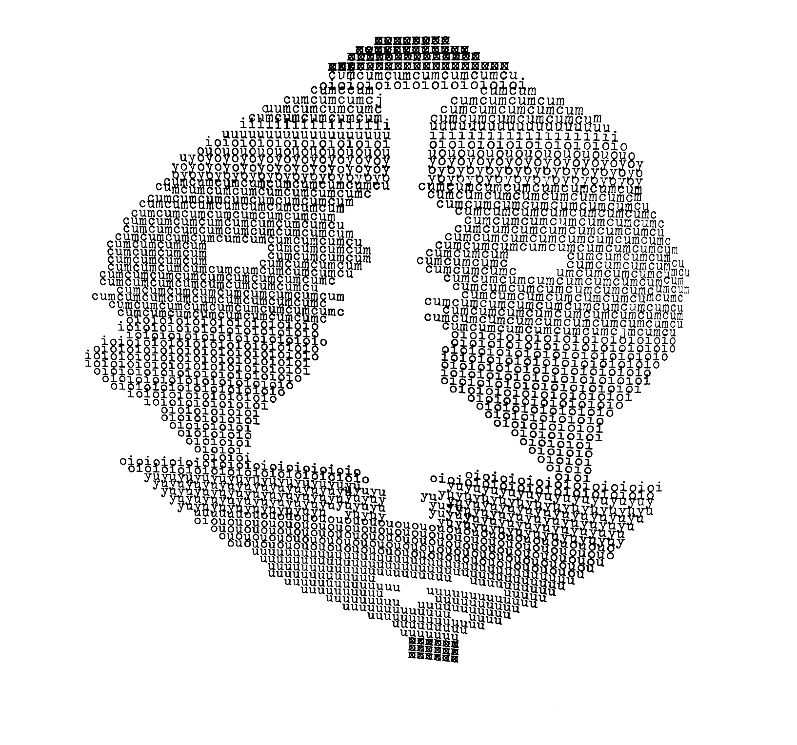
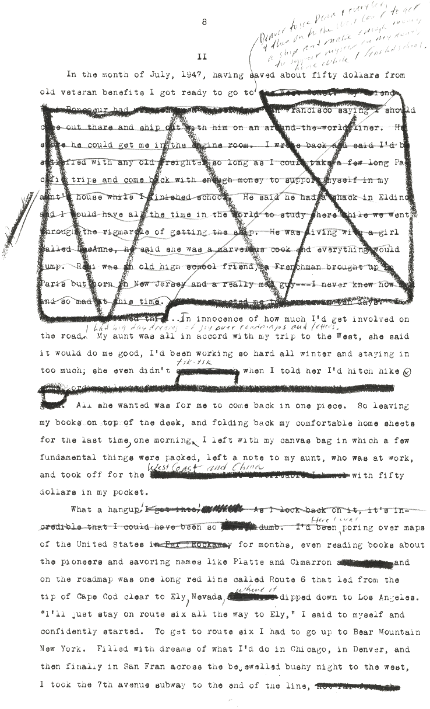

Verín, Zamora, Willie Gonzalez
será quizás que me has hipnotizado.......
será que me has dejado medio mal.......
In the borderlands of Spain, heading into the corner that is the northwest, and hugging the northeastern border of Portugal, there is a narrow passage from which the mountainous region of Galicia connects with the flat tableland that is the meseta. It is an artificial passage, in some sense, because its irregular straightness and the very point at which it dives into a right angle is defined specifically by its border with Portugal, and not by any desert or mountain line.

